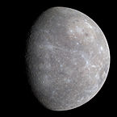
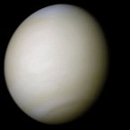

1024kg
(km)
(kg/m3
(m/s2)
of day
(hours)
from
Sun
(106km)
temperature
(oC)


| Names | Mass 1024kg |
Diameter (km) |
Density (kg/m3 |
Gravity (m/s2) |
Length of day (hours) |
Distance from Sun (106km) |
Mean temperature (oC) |
Number of moons | Notes | ||
|---|---|---|---|---|---|---|---|---|---|---|---|
| Terrestial planets | Mercury  | 0.330 | 4,879 | 5427 | 3.7 | 4222.6 | 57.9 | 167 | 0 | Closest to the Sun | |
| Venus | 4.87 | 12,104 | 5243 | 8.9 | 2802.0 | 108.2 | 464 | 0 | |||
| Earth |
>5.97 | 12,756 | 5514> | 9.8 | 24.0 | 149.6 | 15 | 1 | Our world | ||
| Mars |
0.642 | 6,792 | 3933 | 3.7 | 24.7 | 227.9 | -65 | 2 | The red planet | ||
| Jovian planets | Gas giants | Jupiter |
1898 | 142,984 | 1326 | 23.1 | 9.9 | 778.6 | -110 | 67 | The largest planet |
| Saturn |
568 | 120,536 | 687 | 9.0 | 10.7 | 1433.5 | -140 | 62 | |||
| Ice giants | Uranus |
86.8 | 51,118 | 1271 | 8.7 | 17.2 | 2872.5 | -195 | 27 | ||
| Neptune |
102 | 49,528 | 1638 | 11.0 | 16.1 | 4495.1 | -200 | 14 | |||
| Dwarf planets | Pluto |
0.0146 | 2,370 | 2095 | 0.7 | 153.3 | 5906.4 | -225 | 5 | Declassified as a planet in 2006, but this remains controversial. | |